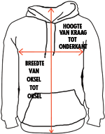

2 kleuren trui:
280 grams/m²
70% katoen/30% polyester, dubbel laags capuchon met kontrastgekleurd reigkoord, nekband voor beter draagcomfort, kontrast gekleurde mouwen met decoratieve stiksels, voorzien van zijnaden, opgezette buidelzak, ribgebreide armmanchetten en onderboord.
| Trui maten: | ||||
|
 | |||